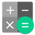

1° Semestre

Fund. da Matemática Elementar
Prof. Ana Helena
Leitura e Produção de Textos
Prof. Ana Helena
Design Digital
Prof. Anderson
Bases da Internet
Prof. Célio Sormani
Criação de Conteúdo Web
Prof. César
Algoritmos e Lógica de Programação
Prof. César
Padrões de Proj. de Sítios Internet I
Prof. Célio Sormani
2° Semestre
Matemática Discreta
Maria Herminia
Legislação Aplicada a T.I.
Prof. Euclydes
Redes e Internet
Prof. Paulo Buscariollo
Prática de Design
Prof. Anderson
Estrutura de Dados
Prof. César
Padrões de Proj. de Sítios Internet II
Prof. Alex Batista
Inglês II
Prof. Vera Merlini
3° Semestre
Acessibilidade
Prof. Rosimeire
Servidores e seus Sistemas Operacionais
Edital
Estatística
Edital
Engenharia de Software para WEB
Prof. Cida Zem
Programação de Sítios Internet
Prof. Vânia Teixeira
Banco de Dados e Internet I
Prof. Wdson Oliveira
Inglês III
Prof. Valéria Validório
4° Semestre
Tópicos Especiais em S.I. I
Prof. Guto Christianini
Segurança em Sist. para Internet
Edital
Desenvolvimento para Servidores I
Vânia Teixeira
Projeto de Navegação e Interação
Prof. Vânia Teixeira
Prática em Gestão de Projetos
Prof. Marcelo Moreira
Banco de Dados e Internet II
Prof. Wdson Oliveira
Inglês IV
Prof. Valéria Validório
5° Semestre
Tópicos Especiais em S.I. II
Prof. Alex Batista
Projeto de T.G. I
Prof. Cida Cris
Proj. Prototip. e Teste de Usabilidade
Prof. Guto Christianini
Desenvolvimento para Servidores II
Vânia Teixeira
Desenvolvimento para Disp. Móveis I
Prof. Alex Batista
Negócios e Marketing Eletrônicos
Prof. Carlos Ciccone
Inglês V
Prof. Vera Merlini
6° Semestre
Tópicos Especiais em S.I. III
Prof. Wdson Oliveira
Projeto de T.G. II
Prof. Célio Sormani
Projeto de Encontrabilidade
Prof. Cida Zem
Arquitetura Orientada a Serviços
Prof. Vânia Teixeira
Desenvolvimento para Disp. Móveis II
Prof. Renato Gambarat
Criação de Empresas para Web
Prof. Humberto
Inglês V
Prof. Vera Merlini